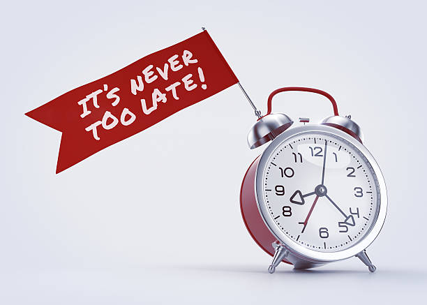

It's never too late
September 28, 2022 by Chavoun Miller

It's never too late to start college or even further your education. I started college at the age of 25 due to a lack of finances and
also no support or guidance. At first I was truly scared but look at me now in my final year and on my way to becoming the first
person in my family to attend university. The journey is not yet over but I learned some valuable lessons along the way and
interacted with some amazing people and also got exposed to new things. Life is short sometimes you have to make the step and take
the risk.
I really and truly hope to be financially stable after completign this degree though because I have been poor my entire life and being
poor feels like a death sentence to be honest. My family is also startign to show some level of moral support these days and I am happier
than I have ever been. I was forunate to make the dean's list but unfortunately my GPa droped because second year computing courses were
created by the devil himself. I will try again though and I will definitely keep you posted so stay tuned and look out for my next blog.
Mi Familia
September 28, 2022 by Chavoun Miller

I only have vague memories of having a united childhood. I was five when my family life came crashing down only it didn't fall on me,
it fell on my step-mother. The only memories I have of the divorce are not of a courtroom, but of my loving father being kicked out of the house
he built from scratch. It was not until I was around seven that I learned my step-mother left my dad just because she was bored.
The first time I spent with my dad after the divorce was awesome we actually went fishing and could finally bond like son and father
and that bond was missing from the day he got married. I knew he was sad because he loved his wife but deep down I was glad I only pretended
to be sad as a means of providing some type of comfort for him.
I am honestly out of stuff to write I have writer's block. I hate writing if I am being honest that's why I steared clear of courses
that requires me to write essays. No matter how difficult computing and mathemeatics is I prefer to struggle with algortithms and
and equations I mean what if the teacher who is markign my essay does not like me? That teacher can or will just fail me if she
feels to. Nope! I am totally against that I honestly even wanted to write onyl a few words but this project required two I mean
two entire paragraphs, what is this Computer Literature?